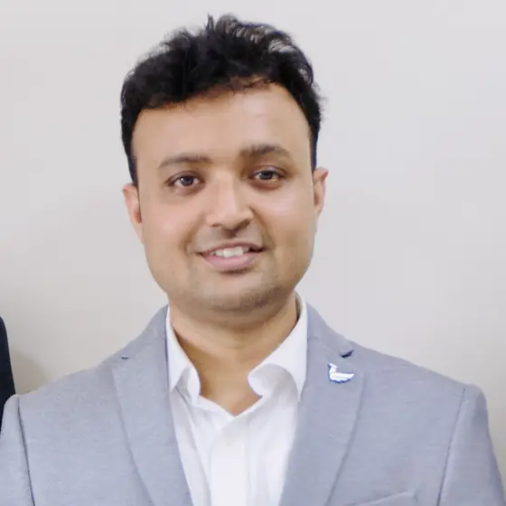
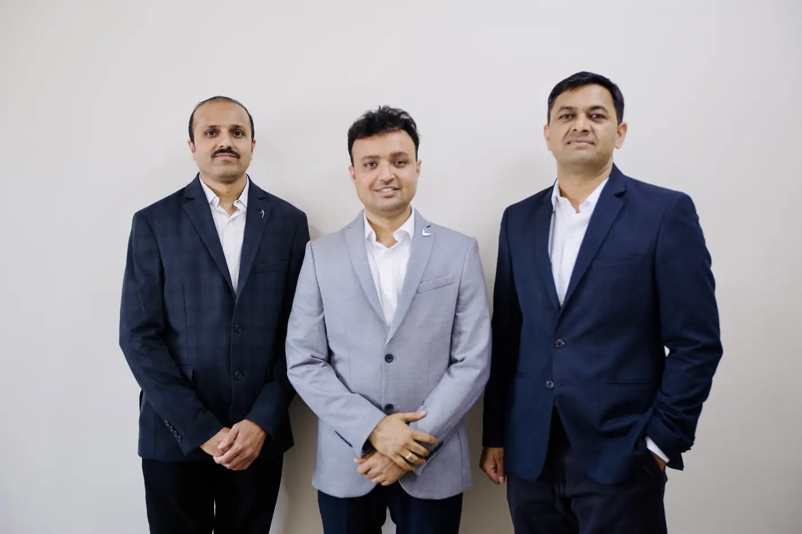

Rahul Shirude
16+ años · automatización industrial e IoT
LinkedInNosotros · Dirección y equipo de ingeniería
La entrega de proyectos depende del criterio técnico, responsabilidades claras y la coordinación entre disciplinas. Conozca a las personas detrás del enfoque integrado de Instron Technologies.

Fundadores
Tres ingenieros en automatización, energía e ingeniería de procesos. Nuestro lema es sencillo: Crezcamos juntos.
Equipo central
Equipo de crecimiento
Desarrollo de negocios, ventas y atención al cliente, en colaboración con los ingenieros que entregan cada proyecto.
Gerente de desarrollo de negocios. Skids de proceso, plantas piloto y escalamiento.
LinkedInLíder de marketing. Plantas piloto, skids de proceso y automatización.
LinkedInIngeniera y consultora de negocios.
LinkedInLíder de marketing, Canadá. MBA, PMP.
LinkedInEquipo de ingeniería
Ingenieros de procesos, proyectos, automatización y TI en nuestros equipos de Pune y Toronto.
Ingeniero sénior de diseño de procesos. M.Tech, tecnología química.
LinkedInIngeniero sénior de proyectos.
LinkedInIngeniero de instrumentación y control.
LinkedInIngeniero de automatización. PLC, SCADA y sistemas de control industrial.
LinkedInIngeniero de proyectos.
LinkedInIngeniero de automatización y control, Canadá. PLC Siemens y Rockwell, HMI/SCADA, puesta en marcha.
LinkedInIngeniero sénior de TI. Desarrollo de software e IIoT.
LinkedInMentores, asesores y socios
Mentores y asesores independientes que orientan nuestra ingeniería y crecimiento, y socios que colaboran con nosotros en sus mercados.
Mentores
Veterano de la Armada de India con 37+ años de liderazgo y gestión de proyectos.
31+ años de consultoría en diseño de sistemas de instrumentación.
38 años en digitalización, IoT, industria 4.0 y transformación en la nube.
30 años en TI para el sector automotriz y la ingeniería.
Asesores
Asesor de ingeniería y proyectos, Calgary. Revisiones técnicas, planeación de proyectos y desarrollo de procesos.
LinkedInFlujos de trabajo digitales y ERPNext, Oakville.
LinkedInPresidente y director general, Global Connect Inc., Saskatoon. Desarrollo de negocios en Saskatchewan.
LinkedInSocios
Director, Business Development MX (BusinessDMX), Monterrey.
LinkedInPropietario y fundador, Chemponics B.V., Voorhout.
LinkedInEstructura del equipo
Estrategia, relaciones con clientes, responsabilidad de la entrega y selección de recursos de ingeniería adecuados.
Bases de proceso, selección de equipos, interfaces mecánicas, planos, documentos de proveedores y coordinación de fabricación.
De P&ID a E/S, arquitectura PLC/HMI/SCADA, interfaces eléctricas, tableros de control, integración y planes de pruebas.
Paquetes de trabajo, control de cambios, evidencia de aceptación, documentación y coordinación con las partes interesadas del cliente y del sitio.
Conectividad de datos industriales, PlantON™, infraestructura de TI y seguridad de sistemas.
Una base técnica acordada, con un responsable designado para cada transferencia.
Los equipos técnicos son más sólidos cuando las responsabilidades y las rutas de escalamiento son explícitas. Los líderes de proyecto coordinan las interfaces de proceso, mecánica, automatización y sitio, en lugar de depender de que cada disciplina descubra las brechas.
Empleos
Nuestros ingenieros trabajan en sistemas de proceso, automatización industrial, instrumentación y datos de planta que operan en plantas reales, con todas las disciplinas en un equipo.
Crezcamos juntos